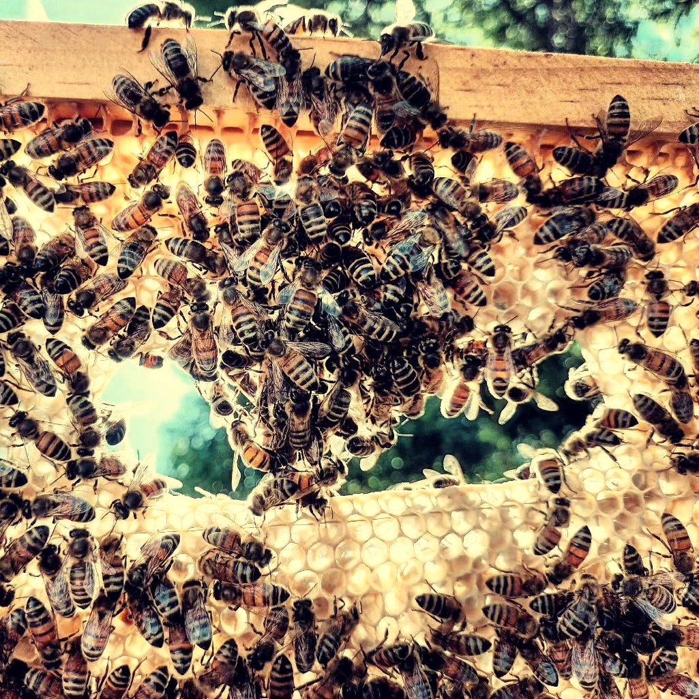

Я пасічник із Гурівки. Тут моя історія, те, як ми працюємо, і природа навколо.
«Біля вулика» — інформаційний сайт про пасіку, бджіл і продукти, які вони дають. Пишу від першої особи й лише про те, що знаю з власної пасіки. Тексти — особистий досвід пасічника, а не медична порада.
Бджолами займаюся з 2012 року, починав із п’яти вуликів і вчився сам. Вулики в мене дадани на дванадцять рамок, бджоли карніка й карпатка. Мед качаю в окремому приміщенні й розфасовую в тару. Як це відбувається, описано в статтях «Як ми качаємо мед» і «Як працює медогонка».
Поруч із пасікою є джерельні озерця, річки й ставки, а бджоли працюють на тому, що цвіте в нашому регіоні України: на акації, різнотрав’ї й соняшнику. Докладніше в статті «Природа навколо пасіки».
На сайті немає кількості вуликів, відстаней і назв місць. Це не секрет заради секрету: мене цікавить розповісти, як працює пасіка й що дають бджоли, а не звітувати цифрами. Усе, що важливо знати читачеві (порода, тип вулика, сезон, склад продуктів), тут написано.
Мед, пилок і перга, які ви бачите на столі, — це результат кількох речей. Перша — те, що цвіло поруч у цьому році. Друга — погода: вона визначає, чи був медозбір. Третя — коли пасічник качає: мед має дозріти й бути запечатаним. Четверта — зберігання вдома. Про кожну з цих речей є окремі сторінки: «Чому мед щороку різний», «Як ми качаємо мед» і «Зберігання і вживання».
Для тих, хто хоче розуміти, звідки береться мед і що таке перга. Для тих, хто вибирає мед і не хоче помилитися. І для тих, хто просто любить бджіл. Сайт двомовний: усі сторінки є українською й російською, перемикач мови стоїть у шапці.
На сайті немає цін, оголошень і контактів: це інформаційний проєкт. Тут можна почитати про бджіл і мед, а фото й відео з пасіки є в Instagram, посилання на нього є в шапці й унизу кожної сторінки.
З якого року ви займаєтеся бджолами?
З 2012 року, а починав із п’яти вуликів. Докладніше: «Хто я і як почав».
Де розташована пасіка?
Поблизу Гурівки в Кіровоградській області. Точне місце я не вказую.
Що дає ваша пасіка?
Мед, квітковий пилок, перга, віск і свічки, мед у стільниках, прополіс і забрус.
Чи є на сайті поради з лікування?
Ні. Тут тільки те, що є в продуктах, як їх зберігати й вживати. Якщо у вас захворювання, спитайте лікаря.